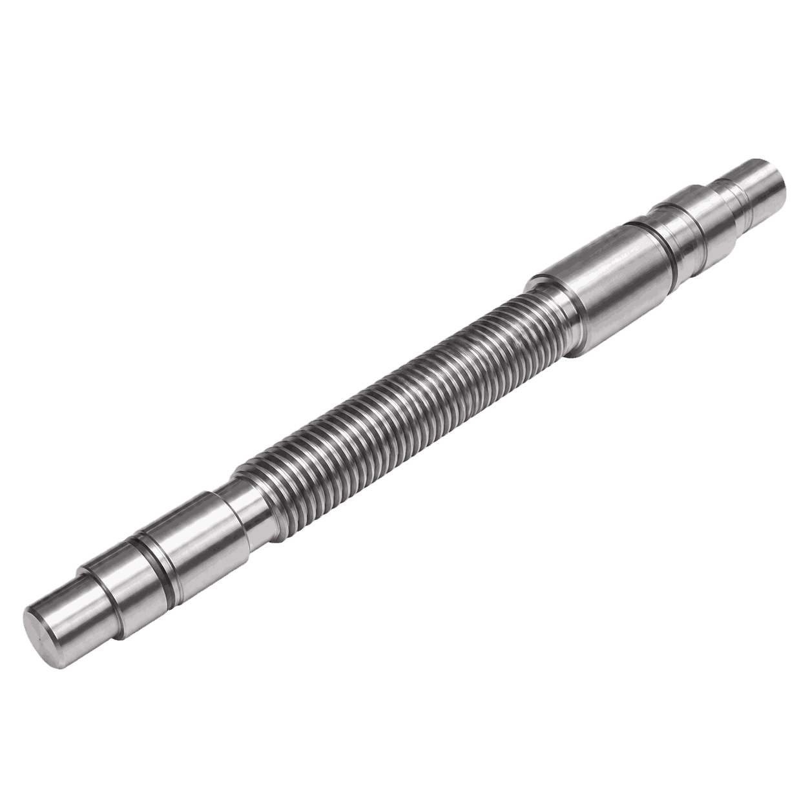

01
Заготовительная резка
Отрезает заготовку для детали «Вал арматуры» с припуском под последующую механическую обработку.

Обеспечить соосность шеек, стабильную геометрию детали «Вал арматуры» и чистоту рабочих поверхностей.
Параметры ориентировочные. Финальная технология и состав оборудования уточняются по чертежу, материалу и программе выпуска.
Отрезает заготовку для детали «Вал арматуры» с припуском под последующую механическую обработку.
Выполняет черновое и чистовое точение протяжённых поверхностей, шеек, торцов и канавок.
Обрабатывает плоскости, карманы, пазы, крепёжные зоны и технологические базы детали.
Финишно обрабатывает шейки и цилиндрические поверхности под подшипники, уплотнения или сопряжения.